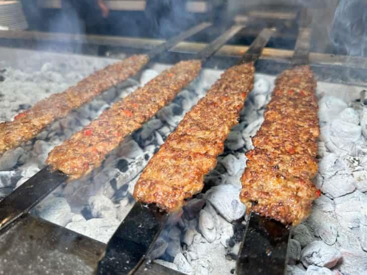

Home
Adana Kebap tarifi

İçindekiler
- Kuzu Eti
- Kuyruk Yağı
- Kırmızı Kapya Biber
- Tuz
- Önce ve Kuyruk yağını kuş başı doğrayın
- Daha sorna ise ikisini zırh ile kıyma halin getirin.
- Bu noktadan sonra için kapya biberleri de ekleyin ve zırhlamaya devam edin.
- Tuzunuda ekledikten sonra artık şişe saplama zamanı
- Ocakta kotnrollü şekilde pişirin. Afiyet olsun!